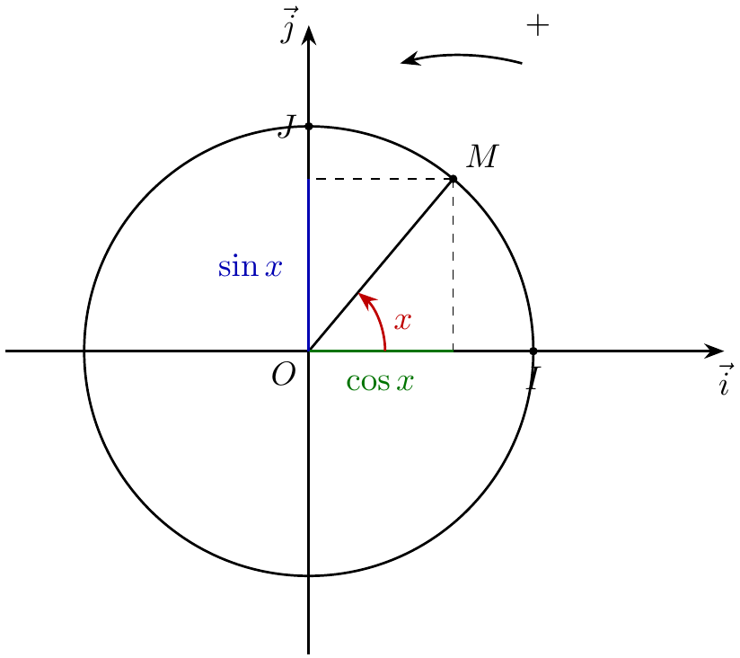
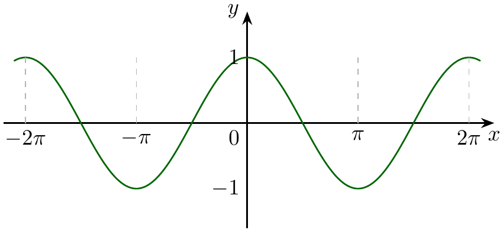
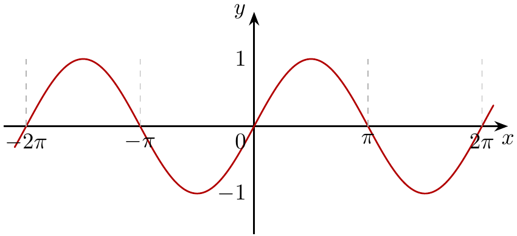
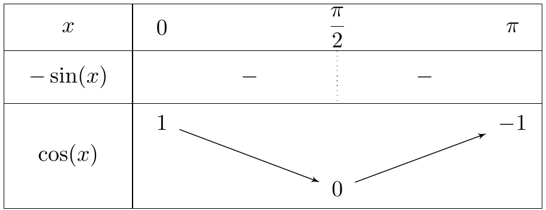
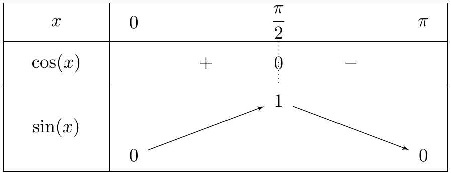

Chapitre 12 : Fonction circulaire
Terminale spécialité · Chapitre 12 — Fonction circulaire · cours de Frederik de Peyrelongue
Dans ce chapitre, on se place dans un repère orthogonal $(O\,;I\,,J)$.
I. Définition, périodicité, parité
Définition
Si l'on considère les fonctions définies sur $\R$ par :
- $f(x)=\cos(x)$ : la fonction cosinus ;
- $g(x)=\sin(x)$ : la fonction sinus.

Représentation graphique de la fonction cosinus

Représentation graphique de la fonction sinus

Périodicité
Soit $f$ une fonction définie sur $\R$. S'il existe un nombre réel $T$ tel que, pour tout réel $t$, on ait $f(t+T)=f(t)$, on dira que $f$ est périodique de période $T$.
Pour tout réel $x$ :
On dit alors que les fonctions sinus et cosinus sont périodiques de période $2\pi$, ou $2\pi$-périodiques. Il suffit donc d'étudier les fonctions cosinus et sinus non pas sur $\R$ mais sur l'intervalle $[-\pi\,;\pi]$, qui correspond à la période de la fonction.
Interprétation graphique : soit une fonction $f$ périodique de période $2\pi$ et $\mathcal{C}$ sa courbe représentative dans le repère orthogonal $(O\,;I\,,J)$.
Comme $f(x)=f(x+2\pi)$, les points $M$ et $M'$ de la courbe $\mathcal{C}$ d'abscisses respectives $x$ et $x+2\pi$ ont même ordonnée : donc $M'$ est l'image de $M$ par la translation de vecteur $2\pi\times\OI$.
Les courbes représentatives des fonctions sinus et cosinus sont invariantes par translation de vecteur $2\pi\times\OI$.
Parité
Soit $f$ une fonction définie sur $\R$ :
- si, pour tout réel $t$, $f(-t)=f(t)$, on dira que $f$ est paire ;
- si, pour tout réel $t$, $f(-t)=-f(t)$, on dira que $f$ est impaire.
Pour tout réel $x$ : $\cos(-x)=\cos(x)$ — on dit alors que la fonction cosinus est paire. La courbe représentative de $\cos(x)$ est symétrique par rapport à l'axe des ordonnées $(OJ)$.
En effet, les points $M$ et $M'$ d'abscisses respectives $x$ et $-x$ ont même ordonnée.
Pour tout réel $x$ : $\sin(-x)=-\sin(x)$ — on dit alors que la fonction sinus est impaire. Les points $M$ et $M'$ d'abscisses respectives $x$ et $-x$ ont des ordonnées opposées. La courbe représentative de sinus présente donc une symétrie centrale par rapport à l'origine.
En utilisant les propriétés de parité, on peut réduire l'étude de cosinus et sinus à $[0\,;\pi]$.
- La courbe représentative de la fonction cosinus est symétrique par rapport à l'axe des ordonnées du repère.
- La courbe représentative de la fonction sinus est symétrique par rapport à l'origine du repère.
Sens de variation
- La fonction dérivée de $f(x)=\cos(x)$ est la fonction $f'(x)=-\sin(x)$.
- La fonction dérivée de $f(x)=\sin(x)$ est la fonction $f'(x)=\cos(x)$.


Représentation graphique
Pour obtenir les représentations graphiques respectives des fonctions cosinus et sinus sur $\R$ :
- on trace d'abord leurs représentations graphiques respectives sur $[0\,;\pi]$, en plaçant notamment les points d'intersection avec l'axe des abscisses, ceux correspondant aux extrema et ceux correspondant aux valeurs aux bornes $0$ et $\pi$ ;
- on complète sur $[-\pi\,;0]$ par symétrie : une symétrie axiale d'axe $(OJ)$ pour la fonction cosinus, et une symétrie centrale de centre $O$ pour la fonction sinus ;
- on complète enfin sur $\R$ en utilisant l'invariance des courbes par translation de vecteur $2\pi\times\OI$.
II. Étude de fonction trigonométrique
Limite en $0$
La limite de ce taux d'accroissement en $0$ est donc le nombre dérivé de sinus en $0$ :
De même :
La limite de ce taux d'accroissement en $0$ est donc le nombre dérivé de cosinus en $0$ :
Dérivée de la composée
Étude de fonction
$f$ est la fonction définie sur $\R$ par
- Justifier le domaine de définition.
- Montrer que la fonction $f$ est paire et $2\pi$-périodique. En déduire le plus petit intervalle d'étude de la fonction $f$.
- Calculer la fonction dérivée $f'$ et déterminer son signe sur l'intervalle $[0\,;\pi]$.
- Dresser le tableau de variation de $f$ sur $[-\pi\,;\pi]$, puis tracer l'allure de la fonction sur $[-\pi\,;3\pi]$.